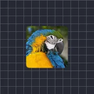

Matte inkrimpen

Maakt de dekkende delen van de laag kleiner door hun randen weg te eten.
Instellingen
| Instelling | Type | Bereik | Standaard |
|---|---|---|---|
| Grootte | Getal | 0 tot 300 | 10 |
| Inkrimpen | Getal | 50% tot 100% | 75% |
| Zachtheid | Getal | 0.001 tot 0.5 | 0.1 |
| Omkeren | Aan of uit | – | Uit |
| Methode | Keuze | Drempel, Eroderen | Drempel |